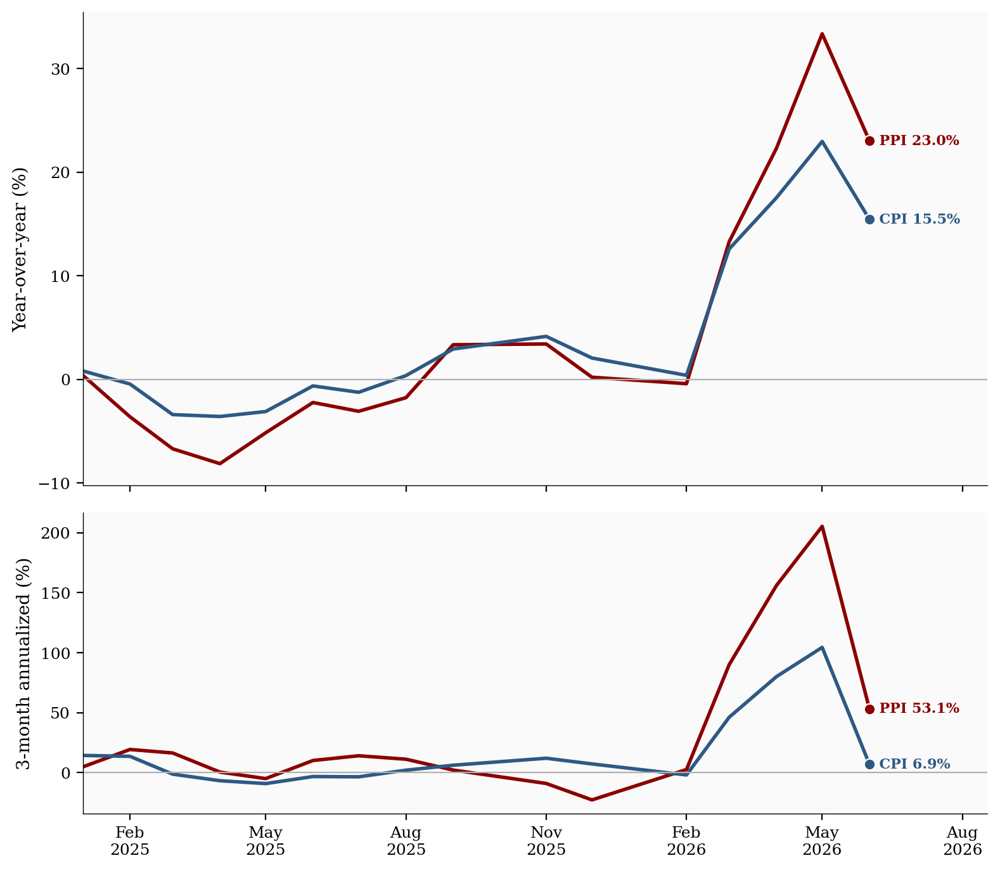
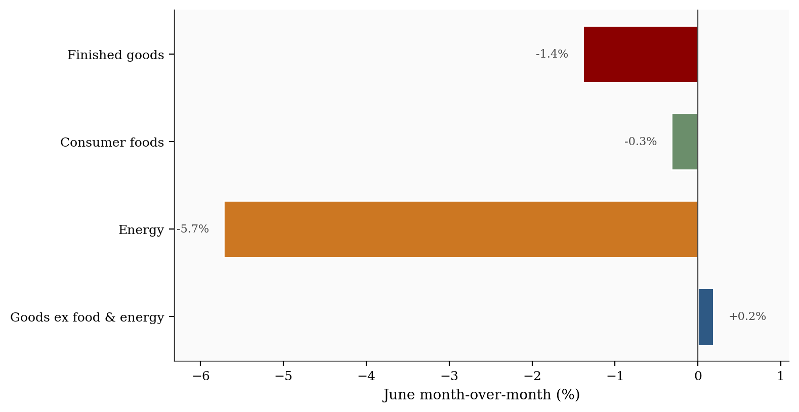
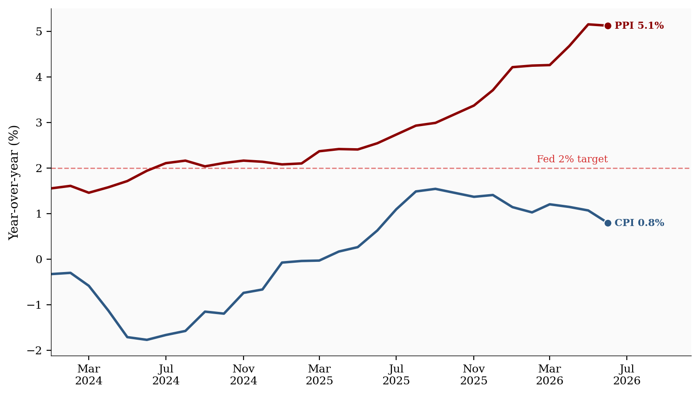
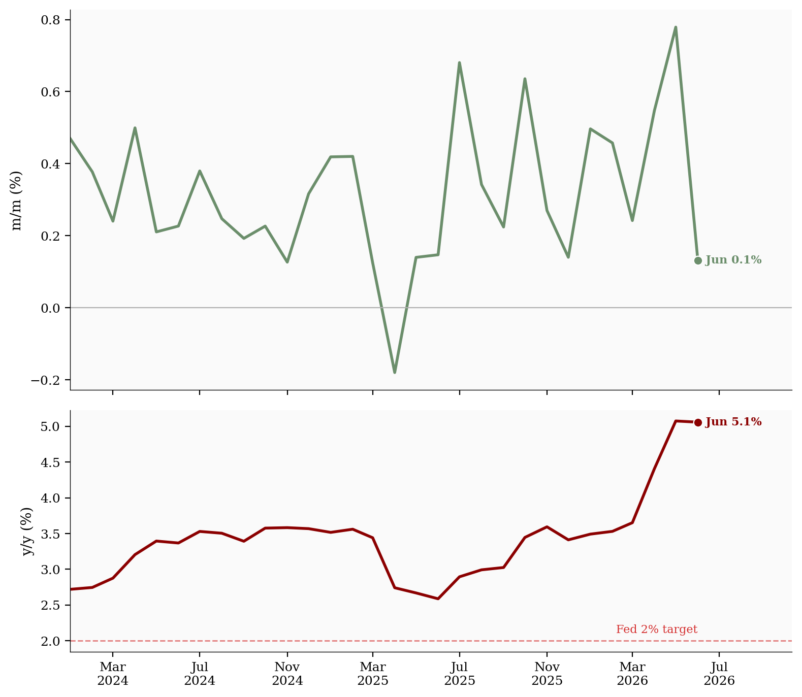

Final demand PPI
-0.3%
y/y 5.5%
Energy PPI
-5.7%
y/y 23.0%
Finished goods
-1.4%
y/y 6.6%
Less food, energy, trade
+0.1%
y/y 5.1%
Latest data: June 2026 | Source: Bureau of Labor Statistics via FRED
Yoram Gilboa
July 25, 2026
June CPI showed that energy relief hit consumers fast, but the July 18 post left the upstream question open. Did the same relief show up at the producer level, or was the consumer drop just a retail-stage effect? June PPI answers the first part clearly: final demand PPI fell -0.3% month-over-month1 and rose 5.5% from a year earlier2. The goods side was weaker still, with finished goods down -1.4%, while the cleaner pipeline gauge still printed +0.1% m/m and 5.1% y/y.
That matters because PPI looks at the price producers receive for goods and services sold to the rest of the economy. In plain English, it is the upstream half of the inflation chain. For many goods, producer prices can move first and consumer prices can follow later. That pipeline lag3 is why a firm PPI core can still matter even when CPI looks calmer today. If energy relief shows up upstream too, the CPI energy move is more likely to be real. If core goods and pipeline measures remain firm, consumer inflation may cool more slowly than the gasoline chart suggests.
This post does not repeat the CPI energy stack from July 18. Instead, it uses June PPI to answer the follow-up question: what is still sitting in the pipeline4 as the July 28-29 FOMC meeting approaches? The short answer is that energy relief was confirmed upstream, but the rest of the chain is not yet calm.
The post uses a simple scripted pipeline. Scripts include beginner comments; expand any chart code block below to see how that figure is drawn.
01_fetch_data.py downloads the FRED series for PPI and CPI comparisons (requires FRED_API_KEY).02_clean_data.py computes monthly change, year-over-year, and 3-month annualized series (rate formulas are documented there).04_compute_stats.py writes every prose and card value to stats/summary_stats.json.Run order from this post folder: 01 then 02 then 04, then re-render. The comparison series come from official BLS index levels served through FRED. If a series had to be approximated from a primary table instead of FRED, it would be marked # MANUAL: in the script, but this draft uses FRED series for the measures shown below.
Latest data: June 2026 | Source: Bureau of Labor Statistics via FRED
The most important cross-check is energy. The July 18 CPI post showed cheaper gasoline and energy pulled consumer prices lower. June PPI says the same thing happened at the producer level. That is a better sign than a retail-only drop, because it means the cost shock was not just being absorbed by stores or delayed in the distribution chain. For energy in June, the story is closer to co-movement than to a long lag: producer and consumer energy inflation moved down together.
# Chart 1: compare PPI vs CPI energy on two paces (y/y and 3-month annualized).
# Rate columns were built in scripts/02_clean_data.py; this block only plots them.
# df and COLORS come from the hidden setup cell at the top of the post.
plot = df.loc["2025-01-01":, [
"ppi_energy_yoy",
"ppi_energy_ann3",
"cpi_energy_yoy",
"cpi_energy_ann3",
]].dropna()
# Two stacked panels, shared x-axis. Standard house size: width 8.0, dual height 7.0.
fig, (ax1, ax2) = plt.subplots(
2, 1, figsize=(8.0, 7.0), sharex=True,
gridspec_kw={"height_ratios": [2.2, 1.4]},
)
# Top panel: year-over-year levels (slower-moving "are we high vs last year?" view).
ax1.plot(plot.index, plot["ppi_energy_yoy"], color=COLORS["accent"], linewidth=2.0, label="PPI energy")
ax1.plot(plot.index, plot["cpi_energy_yoy"], color=COLORS["primary"], linewidth=2.0, label="CPI energy")
ax1.axhline(0, color=COLORS["light"], linewidth=0.8)
extend_x_for_labels(ax1, plot.index, pad_frac=0.15) # room for end labels
ax1.set_ylabel("Year-over-year (%)")
latest = plot.index[-1]
# Direct end-of-line labels replace a legend (Tufte-style).
label_endpoints(
ax1,
[
{"x": latest, "y": plot.iloc[-1]["ppi_energy_yoy"], "text": f"PPI {fmt(plot.iloc[-1]['ppi_energy_yoy'])}%", "color": COLORS["accent"]},
{"x": latest, "y": plot.iloc[-1]["cpi_energy_yoy"], "text": f"CPI {fmt(plot.iloc[-1]['cpi_energy_yoy'])}%", "color": COLORS["primary"]},
],
gap_frac=0.07,
)
# Bottom panel: 3-month annualized pace (faster signal of recent direction).
ax2.plot(plot.index, plot["ppi_energy_ann3"], color=COLORS["accent"], linewidth=2.0, label="PPI energy")
ax2.plot(plot.index, plot["cpi_energy_ann3"], color=COLORS["primary"], linewidth=2.0, label="CPI energy")
ax2.axhline(0, color=COLORS["light"], linewidth=0.8)
ax2.set_ylabel("3-month annualized (%)")
ax2.xaxis.set_major_formatter(mdates.DateFormatter("%b\n%Y"))
ax2.xaxis.set_major_locator(mdates.MonthLocator(interval=3))
extend_x_for_labels(ax2, plot.index, pad_frac=0.15)
label_endpoints(
ax2,
[
{"x": latest, "y": plot.iloc[-1]["ppi_energy_ann3"], "text": f"PPI {fmt(plot.iloc[-1]['ppi_energy_ann3'])}%", "color": COLORS["accent"]},
{"x": latest, "y": plot.iloc[-1]["cpi_energy_ann3"], "text": f"CPI {fmt(plot.iloc[-1]['cpi_energy_ann3'])}%", "color": COLORS["primary"]},
],
gap_frac=0.07,
)
plt.tight_layout()
fig.savefig(IMG_DIR / "ppi-energy-upstream.png", dpi=150, bbox_inches="tight")
Source: PPI energy and CPI energy via FRED.
The line-up is the point. PPI energy and CPI energy moved in the same direction, so the June consumer relief was not a measurement quirk. That makes the month-over-month energy drop more credible than a one-month retail promotion. It is not yet a return to calm: PPI energy was still up 23.0% from a year earlier, and the three-month annualized pace remained 53.1%. Relief is real on the monthly read, but residual energy heat is still sitting in the year-over-year levels.
Goods inflation did not move as cleanly as energy. Core goods5 stayed positive even while the goods headline fell, which is why the producer-side story is more mixed than the energy story. This is also where the PPI-to-CPI lag matters most: energy can clear quickly at both ends of the chain, while other goods often pass through more slowly.
# Chart 2: one-month snapshot of several goods PPI pieces (not a contribution decomp).
# Values are already m/m percent changes from scripts/02_clean_data.py.
latest_date = df["ppi_final_demand_yoy"].dropna().index[-1]
goods = pd.Series(
{
"Finished goods": df.loc[latest_date, "ppi_finished_goods_mom"],
"Consumer foods": df.loc[latest_date, "ppi_foods_mom"],
"Energy": df.loc[latest_date, "ppi_energy_mom"],
"Goods ex food & energy": df.loc[latest_date, "ppi_goods_less_food_energy_mom"],
}
)
# Horizontal bars avoid crowded category labels on long names.
fig, ax = plt.subplots(figsize=(8.0, 4.2))
positions = np.arange(len(goods))
bar_colors = [COLORS["accent"], COLORS["secondary"], COLORS["warning"], COLORS["primary"]]
bars = ax.barh(
positions,
goods.values,
color=bar_colors,
height=0.65,
edgecolor="white",
)
ax.axvline(0, color=COLORS["neutral"], linewidth=0.8) # zero reference
ax.set_xlabel("June month-over-month (%)")
ax.set_yticks(positions)
ax.set_yticklabels(list(goods.index))
# Place +x labels to the right of bars, -x labels to the left.
label_pad = max((goods.max() - goods.min()) * 0.03, 0.08)
for bar, value in zip(bars, goods.values):
x = bar.get_width()
ax.text(
x + (label_pad if x >= 0 else -label_pad),
bar.get_y() + bar.get_height() / 2,
f"{value:+.1f}%",
ha="left" if x >= 0 else "right",
va="center",
fontsize=8,
color=COLORS["neutral"],
)
x_lo = min(goods.min(), -0.5) - 0.6
x_hi = max(goods.max(), 0.5) + 0.6
ax.set_xlim(x_lo, x_hi)
ax.invert_yaxis() # first category at the top
plt.tight_layout()
fig.savefig(IMG_DIR / "ppi-goods-mixed.png", dpi=150, bbox_inches="tight")
Source: WPSFD49207, WPSFD4111, PPIFDE, and WPSFD413 via FRED.
The goods headline was still weak because energy was weak. Foods also edged lower, down -0.3% on the month. But the more important detail for future CPI is that goods less food and energy rose +0.2% in June. That is a small move, not a drama, but it says the rest of the goods pipeline is not fully deflated yet.
# Chart 3: the lag / pass-through chart.
# PPI core goods (producer) vs CPI core goods (consumer), both y/y.
# If the red line stays high while the blue line is soft, the risk is that
# consumer goods inflation firms later (not a guaranteed outcome).
plot = df.loc["2023-01-01":, [
"ppi_goods_less_food_energy_yoy",
"cpi_core_goods_yoy",
]].dropna()
fig, ax = plt.subplots(figsize=(8.0, 4.6))
ax.plot(plot.index, plot["ppi_goods_less_food_energy_yoy"], color=COLORS["accent"], linewidth=2.0, label="PPI goods less food & energy")
ax.plot(plot.index, plot["cpi_core_goods_yoy"], color=COLORS["primary"], linewidth=2.0, label="CPI core goods")
# Fed 2% target as a visual reference (not a PPI target per se).
ax.axhline(2, color=COLORS["fed_target"], linestyle="--", linewidth=1, alpha=0.5)
ax.text(
plot.index[-1], 2.08, "Fed 2% target",
color=COLORS["fed_target"], fontsize=8, alpha=0.8, ha="right", va="bottom",
)
ax.set_ylabel("Year-over-year (%)")
ax.xaxis.set_major_formatter(mdates.DateFormatter("%b\n%Y"))
ax.xaxis.set_major_locator(mdates.MonthLocator(interval=4))
extend_x_for_labels(ax, plot.index, pad_frac=0.15)
label_endpoints(
ax,
[
{"x": plot.index[-1], "y": plot.iloc[-1]["ppi_goods_less_food_energy_yoy"], "text": f"PPI {fmt(plot.iloc[-1]['ppi_goods_less_food_energy_yoy'])}%", "color": COLORS["accent"]},
{"x": plot.index[-1], "y": plot.iloc[-1]["cpi_core_goods_yoy"], "text": f"CPI {fmt(plot.iloc[-1]['cpi_core_goods_yoy'])}%", "color": COLORS["primary"]},
],
gap_frac=0.06,
)
plt.tight_layout()
fig.savefig(IMG_DIR / "ppi-core-goods-compare.png", dpi=150, bbox_inches="tight")
Source: WPSFD413 and CUSR0000SACL1E via FRED.
This is the lag question in one chart. Producer-side core goods are still elevated, at 5.1% y/y, while consumer core goods sit near 0.8%. That gap is the classic pass-through risk: goods price pressure can sit upstream first and show up in CPI only after a lag. Consumer goods inflation can firm later even if energy stays quieter. It does not guarantee a reacceleration in CPI, and the lag is not a fixed calendar rule. It does say the goods pipeline is not done, because the producer side has not cooled to the consumer level.
The Fed watches final demand less foods, energy, and trade services because it strips out the noisiest pieces and leaves a cleaner upstream signal6. In June it slowed sharply from May, but it did not disappear. The monthly rate fell from +0.8% in May to +0.1% in June, while the year-over-year rate still sat near 5.1%.
Separately, final demand trade services (PPITSS on FRED) tracks the margins wholesalers and retailers earn as goods move through the supply chain, not the sticker price of the goods themselves.7 Those margins also rose again in June, with trade-services PPI up +0.4%. That matters because margin pressure can still feed into consumer prices later even if energy has already improved. This is the same chain logic that made earlier PPI-CPI gaps important: upstream strength does not always stay upstream forever.
# Chart 4: Fed-watched pipeline gauge only (WPSFD49116 / ppi_less_food_energy_trade).
# This is NOT PPITSS (trade services). PPITSS is discussed in the prose above.
# Top panel = noisy monthly change; bottom = slower y/y level vs 2% reference.
plot = df.loc["2023-01-01":, [
"ppi_less_food_energy_trade_mom",
"ppi_less_food_energy_trade_yoy",
]].dropna()
fig, (ax1, ax2) = plt.subplots(
2, 1, figsize=(8.0, 7.0), sharex=True,
gridspec_kw={"height_ratios": [2.2, 1.4]},
)
ax1.plot(plot.index, plot["ppi_less_food_energy_trade_mom"], color=COLORS["secondary"], linewidth=2.0)
ax1.axhline(0, color=COLORS["light"], linewidth=0.8)
ax1.set_ylabel("m/m (%)")
extend_x_for_labels(ax1, plot.index, pad_frac=0.15)
ax2.plot(plot.index, plot["ppi_less_food_energy_trade_yoy"], color=COLORS["accent"], linewidth=2.0)
ax2.axhline(2, color=COLORS["fed_target"], linestyle="--", linewidth=1, alpha=0.5)
ax2.text(
plot.index[-1], 2.08, "Fed 2% target",
color=COLORS["fed_target"], fontsize=8, alpha=0.8, ha="right", va="bottom",
)
ax2.set_ylabel("y/y (%)")
ax2.xaxis.set_major_formatter(mdates.DateFormatter("%b\n%Y"))
ax2.xaxis.set_major_locator(mdates.MonthLocator(interval=4))
extend_x_for_labels(ax2, plot.index, pad_frac=0.15)
label_endpoints(
ax1,
[
{"x": plot.index[-1], "y": plot.iloc[-1]["ppi_less_food_energy_trade_mom"], "text": f"Jun {fmt(plot.iloc[-1]['ppi_less_food_energy_trade_mom'])}%", "color": COLORS["secondary"]},
],
gap_frac=0.08,
)
label_endpoints(
ax2,
[
{"x": plot.index[-1], "y": plot.iloc[-1]["ppi_less_food_energy_trade_yoy"], "text": f"Jun {fmt(plot.iloc[-1]['ppi_less_food_energy_trade_yoy'])}%", "color": COLORS["accent"]},
],
gap_frac=0.08,
)
plt.tight_layout()
fig.savefig(IMG_DIR / "ppi-pipeline-pressure.png", dpi=150, bbox_inches="tight")
Source: WPSFD49116 via FRED. Trade-services margins (PPITSS) are discussed in the text only and are not plotted here.
June is the sort of month that keeps both sides of the argument alive. The pipeline measure cooled hard enough to support the case that inflation is still trending down, but its y/y level is still too high to call the job finished. Add the June rise in trade-services margins, and the message is more cautious than celebratory.
The new information from PPI is incremental, not dramatic. It does not overturn the July 18 CPI read. It does confirm that the energy relief was real on both sides of the price chain, which supports the hold case already on the table for the July 28-29 FOMC. But it also says that core goods and pipeline pressure have not fully reset to a calm, 2% environment.
That is why this release matters. It narrows the list of things the Fed has to worry about, but it does not eliminate them. A clean energy move is helpful. A still-firm pipeline is a reminder that consumer inflation can slow unevenly, with lag from producer to consumer prices, and with bumps along the way.
For households: gasoline relief is real, and June PPI says it was not just a retail illusion. But the broader goods pipeline is still warm enough that some prices may keep drifting higher even if energy stays quieter.
For investors: the data support a slower disinflation path, not an easy victory lap. That keeps the July FOMC in hold territory unless something else breaks the pattern.
For the Fed: the June PPI report gives you a cleaner energy story and a messier core story. That combination argues for patience, not complacency.
PPITSS) is discussed in text only; the pipeline chart uses the ex-food, energy, and trade gauge (WPSFD49116).| Series | Plain-English description | Source |
|---|---|---|
| PPIFIS | PPI final demand | FRED |
| PPIFDG | PPI final demand goods | FRED |
| WPSFD49207 | PPI finished goods | FRED |
| PPIFDE | PPI final demand energy | FRED |
| WPSFD4111 | PPI finished consumer foods | FRED |
| WPSFD413 | PPI final demand goods less food and energy | FRED |
| WPSFD49116 | PPI final demand less foods, energy, and trade services | FRED |
| PPITSS | PPI final demand trade services (wholesaler/retailer margins; prose only) | FRED |
| CPIENGSL | CPI energy | FRED |
| CUSR0000SACL1E | CPI commodities less food and energy commodities | FRED |
| CPIAUCSL | Headline CPI | FRED |
| CPILFESL | Core CPI | FRED |
All series are monthly FRED observations from official BLS index data. Month-over-month, year-over-year, and three-month annualized rates are defined in scripts/02_clean_data.py and calculated from monthly index levels. The draft uses stats/summary_stats.json for all prose values and card values.
Data current as of June 2026 CPI and PPI observations queried on July 24, 2026.
Month-over-month, or m/m, means the change from one month to the next.↩︎
Year-over-year, or y/y, compares the latest month with the same month one year earlier.↩︎
Pipeline lag means producer-side price changes can show up in consumer prices only after inventory, contracts, and retail pricing catch up. The lag is not a fixed number of months, and it is much weaker for services and shelter than for goods.↩︎
Pipeline pressure means upstream price pressure that has not fully reached consumer shelves yet.↩︎
Core goods means goods excluding food and energy. It is a simple way to see whether the rest of the goods basket is still under pressure.↩︎
Final demand less foods, energy, and trade services (FRED: WPSFD49116) is a narrow PPI measure of underlying producer-side price pressure after volatile food and energy and margin-heavy trade services are removed. The chart below plots this series only.↩︎
PPITSS is the BLS Producer Price Index for final demand trade services. It is used only in the prose of this section, not in the pipeline chart below. Removing trade services is exactly why the Fed-watched WPSFD49116 gauge is cleaner.↩︎